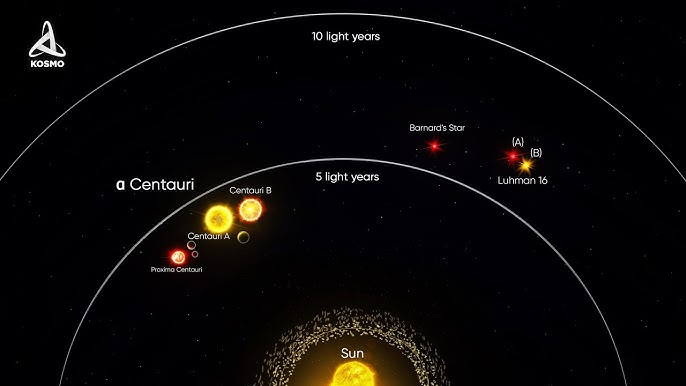

Entorno 1: Sistema Solar Próximo
O Sistema Solar representa nosso laboratório mais próximo para compreender os fundamentos da astrofísica. Estudando a dinâmica planetária, cinturões de asteroides e a interação entre planetas e radiação solar, podemos observar como a gravidade molda trajetórias e mantém a estabilidade orbital. Além disso, analisar a radiação solar e seu impacto nos corpos próximos nos ajuda a entender fenômenos como ventos solares, magnetosferas e efeitos de maré, que são aplicáveis em escalas maiores do universo.

Entorno 2: Vizinhança Estelar
A vizinhança estelar nos permite aplicar conceitos básicos como a gravitação universal e a radiação eletromagnética para analisar estrelas próximas. Estudando exoplanetas, suas zonas habitáveis e interações gravitacionais, conseguimos compreender os mecanismos que regem a formação de sistemas planetários fora do nosso próprio sistema. A radiação estelar também revela informações cruciais sobre a composição química e temperatura das estrelas, permitindo inferir a presença de atmosferas ou condições para a existência de vida.
Entorno 3: Galáxias e Aglomerados
Em escalas maiores, como galáxias e aglomerados, os conceitos básicos de gravitação e dinâmica orbital se expandem para sistemas complexos. Estudar fusões galácticas, órbitas de estrelas em aglomerados e a distribuição de matéria escura permite compreender como a gravidade organiza a estrutura do universo. Observações eletromagnéticas, desde rádio até raios-X, são essenciais para detectar regiões de intensa formação estelar ou eventos de alta energia, conectando os princípios fundamentais com fenômenos reais em larga escala.